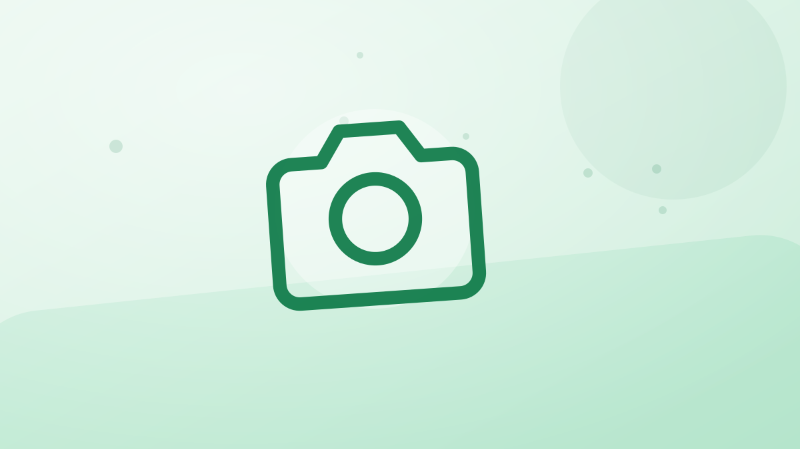

Notas sobre nutrición y calorías, con honestidad.
Textos prácticos y sin glamur sobre nutrición, peso y los hábitos que lo sostienen todo — justo la parte que casi todo internet se salta camino de venderte algo.
Nueve series cortas, de la primera pregunta a la última
Las calorías, desde cero
Qué gasta tu cuerpo, qué es un déficit, a qué ritmo perder y cómo contar sin que sea un segundo trabajo. Siete artículos, en el orden en que llegan las dudas.
Empezar la serie → Pérdida de pesoPerder peso que no vuelve
Lo que viene después del primer mes: estancamientos, la báscula, el cuento del «modo supervivencia» y qué te pide de verdad el mantenimiento.
Empezar la serie → Pérdida de pesoLas dietas de moda, examinadas
Dietas exprés, ayuno, baja en carbohidratos o en grasa, horarios y détox, cada una contrastada con la evidencia y no con el marketing, y qué hacer en su lugar.
Empezar la serie → NutriciónMacros: proteína, carbohidratos y grasa
Qué hace cada macronutriente, cuánto necesitas de cada uno y cómo fijar objetivos para perder peso sin hoja de cálculo ni obsesión con la proteína.
Empezar la serie → NutriciónMás allá de los macros
Fibra, vitaminas y minerales, azúcar, calidad de la comida y la etiqueta de atrás del envase: lo que un recuento de calorías no te enseña, y por qué importa.
Empezar la serie → Comer a diarioComer bien un día normal
El plato, los alimentos que sacian, las raciones, los snacks, el desayuno, los restaurantes, el presupuesto, y dos artículos sólo en español sobre el menú del día y las tapas. Sin reglas que no puedas cumplir un martes.
Empezar la serie → Comer a diarioPlanificar la semana
Treinta minutos de planificación, una lista escrita a partir del plan y una sesión de cocina por adelantado. Tres artículos, en el orden en que los harías.
Empezar la serie → MentalidadApetito, ánimo y hábito
Atención en la mesa, antojos, comer por motivos que no son el hambre, las noches y la constancia cuando no hay motivación. Más suave que el resto, a propósito.
Empezar la serie → Movimiento y sueñoMovimiento, sueño y agua
Qué hace y qué no el ejercicio por tu peso, el movimiento que no cuentas, pesas frente a cardio y los dos hábitos que deciden el resto: dormir y beber agua.
Empezar la serie →
¿Son fiables las apps de calorías con foto? Lo que no ven
Una foto identifica bien el plato y adivina peor la cantidad. Aquí está de dónde sale el error de verdad, por qué nadie puede darte un porcentaje honesto y las tres correcciones que quitan casi todo en diez segundos.
56 artículos
Calorías de un menú del día: primero, segundo, pan, bebida y postre
Un menú del día no es un plato, son cinco cosas. Tres combinaciones reales sumadas con las cifras por ración de la app, de 518 a 1.073 kcal, y los dos o tres cambios que separan la una de la otra sin renunciar al menú.
Leer → Comer a diarioCuántas calorías tienen las tapas: caña, bravas, croquetas, pincho de tortilla y jamón
Nadie cuenta las calorías de una tarde de tapas, y por eso es la comida que más desordena una semana. Cada tapa y cada caña con su cifra por ración, dos tardes reales sumadas (370 y 926 kcal) y los cambios que no se notan en la mesa.
Leer → Contar caloríasCómo elegir una app de calorías con foto (y qué es gratis)
Seis preguntas que hacerle a cualquier app que cuenta calorías con una foto antes de que te convenza el vídeo de la demo. Y, en los mismos términos llanos, qué incluye y qué no el plan gratis de Fotocal.
Leer → Contar caloríasCómo contar calorías con precisión: guía para principiantes
Aprende a contar calorías con precisión sin quemarte. Una guía práctica y sin rodeos sobre raciones, etiquetas y cómo crear un hábito que dure.
Leer → Contar caloríasTDEE explicado: cuántas calorías necesitas de verdad
Tu TDEE es el número de calorías que quemas al día. Cómo estimarlo, cómo medirlo con tus propios datos, por qué cambia y cómo usarlo para perder peso.
Leer → Contar caloríasDéficit calórico: la regla detrás de toda pérdida de grasa
Toda dieta que funciona lo hace porque crea un déficit calórico. Qué es un déficit, cómo de grande debe ser y cómo sostenerlo sin pasarlo mal.
Leer → Contar calorías7 errores al contar calorías que frenan tu progreso
¿Cuentas calorías y no bajas de peso? Estos siete errores explican la mayoría de los progresos estancados, y todos se pueden corregir esta misma semana.
Leer → Nutrición¿Importan las calorías o solo la calidad de la comida?
«Una caloría es una caloría» frente a «céntrate en comida real»: esta guía zanja el debate y muestra por qué cantidad y calidad importan las dos.
Leer → Contar caloríasCómo contar calorías sin pesar cada comida
¿Sin báscula de cocina? Aún puedes registrar bien usando porciones de la mano, referencias visuales y el registro por foto. Guía práctica para estimar bien.
Leer → NutriciónCómo leer las etiquetas nutricionales: guía práctica
Raciones, % de valores diarios, azúcares añadidos y marketing tramposo: aprende a leer una etiqueta en segundos y a esquivar las trampas más comunes.
Leer → NutriciónMacronutrientes 101: proteína, carbohidratos y grasa
Una guía clara para principiantes sobre los tres macronutrientes: qué hace cada uno, cuántas calorías aportan y cómo equilibrarlos según tus objetivos.
Leer → Nutrición¿Cuánta proteína necesitas realmente al día?
La CDR es un suelo, no un objetivo. Cuánta proteína necesitas de verdad para músculo, pérdida de grasa y saciedad, con formas sencillas de llegar.
Leer → NutriciónLos carbohidratos no son el enemigo: una mirada equilibrada
Llevamos décadas culpando a los carbohidratos del aumento de peso. Esto es lo que hacen en realidad, cuáles conviene priorizar y por qué no merecen tanto miedo.
Leer → NutriciónGrasa en la dieta: cuánta necesitas y de qué tipo
La grasa no engorda por defecto: es esencial. Cuánta grasa necesitas al día, en qué se diferencian los tipos y cómo elegir con criterio sin temerle al aceite.
Leer → NutriciónCómo calcular tus macros para perder peso (paso a paso)
Un método sencillo y sin rodeos para calcular tus calorías y macros de pérdida de grasa: primero la proteína, luego grasas y carbohidratos, con ejemplo.
Leer → NutriciónLa fibra: el nutriente infravalorado para controlar el peso
La fibra te sacia, estabiliza el azúcar en sangre y cuida tu intestino, y aun así casi nadie llega. Cuánta necesitas al día y cómo conseguirla sin esfuerzo.
Leer → NutriciónMicronutrientes: por qué importan al contar calorías
Puedes cumplir tus objetivos de calorías y macros y aun así comer mal. Por qué importan los micronutrientes y cómo cubrirlos sin obsesionarte.
Leer → NutriciónAzúcar añadido frente a natural: lo que de verdad importa
¿El azúcar de la fruta es tan malo como el de un refresco? Esta es la diferencia real entre azúcares añadidos y naturales, y cuánto azúcar es demasiado.
Leer → Pérdida de pesoCómo perder peso de forma sostenible (sin dietas exprés)
Las dietas exprés fracasan porque son invivibles. Un enfoque sostenible y basado en la evidencia que sí puedes mantener toda la vida, con los pasos en orden.
Leer → Pérdida de pesoPor qué la báscula no cuenta toda la historia
El número de la báscula oscila por decenas de razones que no tienen nada que ver con la grasa. Qué mide de verdad y cómo medir tu progreso sin volverte loco.
Leer → Pérdida de pesoEstancamientos al perder peso: por qué pasan y qué hacer
¿Progreso parado? Los estancamientos son normales y tienen arreglo. Las razones reales por las que se frena la pérdida y formas prácticas de reactivarla.
Leer → Contar calorías¿Cuánto peso se puede perder en una semana? El ritmo que no vuelve
Más rápido no es mejor. El ritmo de pérdida de peso que protege el músculo, evita el efecto rebote y no se recupera después, con las cifras a las que apuntar.
Leer → Pérdida de pesoLa verdad sobre el «modo supervivencia»
¿Comer muy poco detiene la pérdida de peso? La ciencia real de la adaptación metabólica, los mitos desmontados y qué pasa de verdad cuando comes poco.
Leer → Pérdida de pesoMantener el peso perdido: la parte de la que nadie habla
Perder peso es la mitad del trabajo. Cómo no recuperarlo: los hábitos, la mentalidad y los pequeños sistemas que hacen que el mantenimiento funcione.
Leer → MentalidadComer por emociones: cómo reconocerlo y manejarlo
Comer para calmar el estrés, el aburrimiento o la tristeza es humano, pero puede desviarte de tus objetivos. Cómo detectarlo y responder con amabilidad.
Leer → Movimiento y sueñoCómo afecta el sueño a tu peso (más de lo que crees)
Dormir poco hace más difícil perder peso: más hambre, antojos más fuertes, menos movimiento. Lo que muestra la evidencia y formas sencillas de dormir mejor.
Leer → Comer a diario¿Cómo es realmente un plato equilibrado?
Olvídate de los planes de comida complicados. El método del plato equilibrado es un sistema visual sencillo para montar comidas satisfactorias sin contar nada.
Leer → Comer a diarioDesayunos con mucha proteína para llegar saciado a la comida
Un desayuno rico en proteína te mantiene saciado toda la mañana. Ideas sencillas y saciantes, desde opciones de cinco minutos hasta preparadas la víspera.
Leer → Comer a diarioSnacks saludables que de verdad sacian
Picar entre horas está bien cuando el snack cumple. Ideas saciantes, con proteína y fibra, que quitan el hambre entre comidas, y las que solo dan ganas de más.
Leer → Comer a diarioCómo comer sano con poco presupuesto
Comer bien no tiene por qué salir caro. Estrategias prácticas para cumplir tus objetivos de proteína y nutrición con los básicos del súper, sin arruinarte.
Leer → Comer a diarioComer fuera sin perder el hilo
Los restaurantes caben en tus objetivos. Hábitos sencillos para pedir, para las raciones y para el pan que te dejan disfrutar fuera sin salirte de tus calorías.
Leer → Comer a diarioCómo hacer una lista de la compra saludable
Comer bien empieza en el carro de la compra. Cómo montar una lista que llene tu cocina de aciertos y deje las compras impulsivas en el estante.
Leer → Comer a diarioMeal prep para principiantes: un sistema sencillo
Preparar comidas ahorra tiempo, dinero y decisiones a última hora. Un sistema para principiantes, con cómo cocinar en tandas, que no te roba todo el domingo.
Leer → Comer a diarioControl de raciones: trucos sencillos que sí funcionan
Las raciones han crecido en silencio durante décadas. Trucos prácticos para comer la cantidad adecuada en casa y fuera, sin pesar nada y sin sentir privación.
Leer → Movimiento y sueñoHidratación y peso: ¿cuánta agua necesitas de verdad?
El agua importa más de lo que parece para el apetito, la energía y el rendimiento. Cuánta necesitas realmente y cómo apoya tus objetivos de peso.
Leer → Comer a diarioCómo planificar una semana de comidas en 30 minutos
Planificar el menú no tiene por qué ser complicado. Esta rutina semanal de 30 minutos te quita de encima el estrés diario del «¿qué cenamos?».
Leer → MentalidadAlimentación consciente: guía para principiantes
Comer con atención plena puede ayudarte a disfrutar más de la comida y a comer de más con menos frecuencia. Qué es, por qué funciona y cómo practicarlo hoy.
Leer → MentalidadCómo dejar de comer de más por la noche
Comer de noche echa a perder muchos días buenos. Por qué ocurre, qué dice del resto del día y estrategias prácticas para que tus noches no se descontrolen.
Leer → Mentalidad¿Alimentación intuitiva o contar calorías? Mejor las dos
La alimentación intuitiva y el conteo de calorías se presentan como enemigos. En realidad se complementan, en un orden concreto, y así puedes combinarlos.
Leer → MentalidadCómo manejar los antojos sin sentir culpa
Los antojos son normales, no un fallo moral. Por qué aparecen, qué les hace la restricción y cómo satisfacerlos de forma que encajen en tus metas, sin culpa.
Leer → Movimiento y sueño¿Hace falta hacer ejercicio para perder peso?
¿Se puede adelgazar sin gimnasio? La respuesta honesta sobre dieta y ejercicio para perder grasa, y por qué aun así no conviene saltarse el movimiento.
Leer → Movimiento y sueñoCardio o pesas para perder grasa
¿Hacer cardio o levantar pesas para perder grasa? Qué aporta cada uno, por qué la respuesta honesta es «los dos» y cómo combinarlos para que el déficit trabaje.
Leer → Movimiento y sueño¿Cuántas calorías quema realmente el ejercicio?
Las pulseras y las máquinas de cardio suelen exagerar el gasto. Una mirada realista a las calorías del ejercicio y por qué «recuperarlas» comiendo sale mal.
Leer → Movimiento y sueñoGanar músculo mientras pierdes grasa: ¿es posible?
La recomposición corporal —perder grasa y ganar músculo a la vez— es real, pero tiene matices. Quién puede lograrla, cómo, y qué esperar de forma realista.
Leer → Movimiento y sueñoNEAT: el gasto calórico oculto que estás ignorando
El NEAT —las calorías que quemas con el movimiento cotidiano— puede superar de largo a tus entrenamientos. Qué es y cómo usarlo para perder grasa más fácil.
Leer → MentalidadCómo mantener la constancia con los hábitos saludables
La constancia gana siempre a la intensidad. Estrategias prácticas, sacadas de cómo se forman los hábitos de verdad, para que comer bien y moverte se queden.
Leer → NutriciónEl momento de la proteína: ¿importa de verdad?
¿Existe la «ventana anabólica»? Qué dice la ciencia sobre el momento de tomar proteína, el mito de los 30 minutos post-entreno y lo que sí importa.
Leer → Pérdida de pesoAyuno intermitente: qué dice la evidencia
¿El ayuno intermitente es magia o control de calorías disfrazado? Una mirada basada en la evidencia a sus beneficios reales y a quién le encaja.
Leer → Pérdida de pesoBaja en carbohidratos o baja en grasa: ¿cuál te conviene?
El debate entre low-carb y low-fat lleva años encendido. Esto es lo que muestra la investigación y cómo elegir el enfoque que encaja en tu vida.
Leer → Pérdida de pesoLa verdad sobre las dietas «détox» y las curas depurativas
Los zumos depurativos y los tés détox prometen eliminar toxinas y derretir grasa. Lo que ocurre en realidad, y por qué tu hígado ya lo hace gratis.
Leer → Pérdida de pesoPor qué fracasan las dietas exprés (y qué hacer en su lugar)
Las dietas exprés prometen resultados rápidos y entregan efecto rebote. La ciencia de por qué fallan y una alternativa sostenible que sí funciona.
Leer → NutriciónDieta alta en proteína: beneficios y cómo empezar
Una dieta más rica en proteína favorece la pérdida de grasa, el músculo y la saciedad. Los beneficios reales, cuánta apuntar y formas fáciles de comer más.
Leer → Contar caloríasEntender tu tasa metabólica basal (TMB)
Tu TMB es la energía que tu cuerpo quema solo por mantenerte vivo. Qué la afecta, cómo estimarla y cómo encaja en tus necesidades calóricas.
Leer → Comer a diarioLos mejores alimentos para adelgazar: los que sacian con menos calorías
Ningún alimento es mágico, pero algunos te llenan con muchas menos calorías. Estos son los alimentos saciantes que hacen que un déficit resulte casi fácil.
Leer → Pérdida de peso¿Cenar tarde engorda? Lo que de verdad importa del horario de las comidas
¿Cenar tarde engorda? ¿Hace falta desayunar? Esto es lo que dice la evidencia sobre horarios y frecuencia de comidas, y lo que de verdad importa.
Leer →Aún no hay artículos en esta categoría.
Leer está bien. Hacerlo, mejor.
Pon cualquiera de estas ideas en práctica en unos diez segundos por comida: fotografía tu plato y Fotocal se encarga de los números.
Descárgala gratis En Google Play · Android